Combat robotics
Competition projectFREEDOM
3 lb NHRL combat robot

Overview
I led FREEDOM, a nine-member team’s 3 lb vertical-spinner combat robot, during Villanova’s first appearance at the National Havoc Robot League (NHRL). I helped turn an initial layout into an assembled robot, coordinated subsystem work, and drove the robot at competition.
What I owned
Layout and design direction. I researched existing 3 lb robot designs and used the weight constraint to establish dimensions for the team’s design. I modeled every component in SolidWorks except the armor and weapon, whose detailed designs I delegated to teammates. I used simplified component models to communicate the planned layout to my team and Bradley, the club president at the time. Those dimensions gave the armor and weapon teams a starting point for their detailed designs.
Component coordination. I worked directly with Bradley, whose competition knowledge and connections helped guide part choices. He handled ordering through the university. I coordinated those decisions with the team’s layout and weight budget.
Assembly and fabrication. After teammates with more experience handled controls work and soldering, I assembled the robot myself. I cut the dead shaft with a bandsaw and coordinated armor and weapon fabrication with an experienced CNC and laser-cutter operator. Other teammates handled finishing and touchups.
Competition preparation. I arranged backup armor and electronics and spent more than five hours testing and practicing driving to build confidence with the robot’s handling.
Requirements & weight budget
The main constraint was the 3 lb competition weight limit. My initial budget allocated approximately 1 lb each to electronics, armor, and the weapon. These were planning targets that guided subsystem design.
Getting the weapon down to its allocation proved difficult. It was not finished until the day before competition, and the assembled robot weighed exactly 3 lb before an additional safety-switch holder was fitted at inspection.
Design & build
The build progressed from simplified SolidWorks layout models to detailed armor and weapon designs delegated to teammates, then to printed prototypes and final assembly. We used Bambu 3D printers for prototype parts. My role connected the subsystem dimensions, component availability, fabrication work, and final assembly.
Design decision: protecting the weapon motor
In my class beetlebot project, I connected the weapon motor directly to the weapon. For FREEDOM, I chose to place the motor inside the robot to give it more protection. This required a belt-and-pulley transmission, which I sized myself.
The tradeoff was additional design and packaging work for the transmission. I considered that extra effort worthwhile because the protected motor placement made the overall layout more viable. This decision built on what I had learned from the earlier beetlebot project.
From CAD to prototype

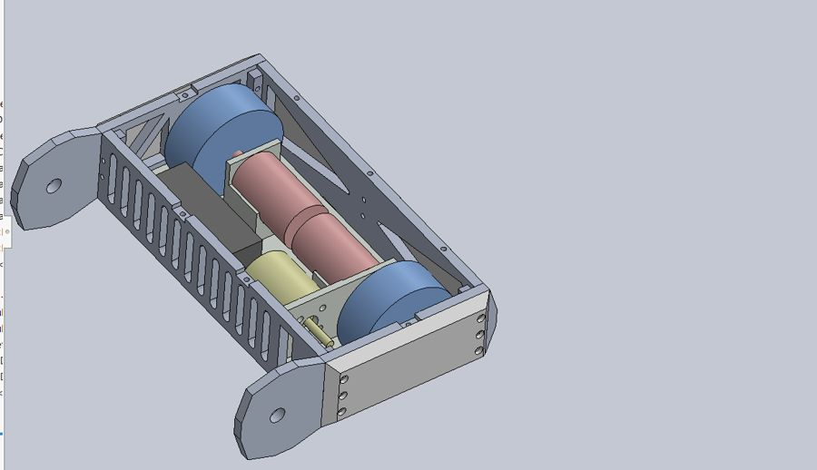

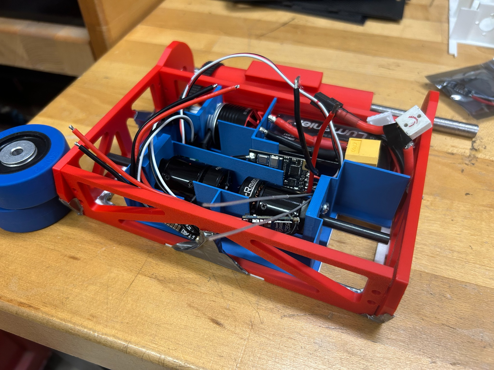

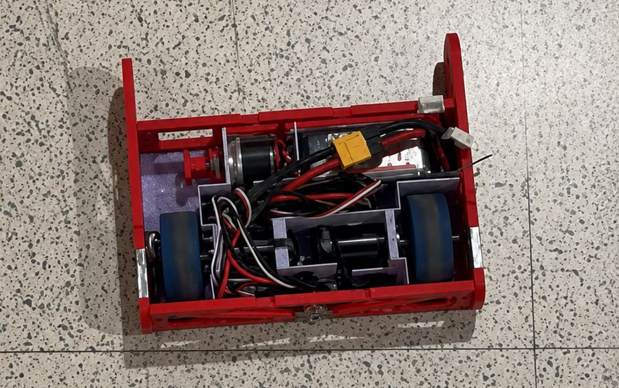
Competition outcome & lessons
Inspection and weight. FREEDOM weighed exactly 3 lb before a safety-switch holder was added to pass inspection. The added hardware pushed us over the limit, so we had to remove armor material at the event.
First match: unable to receive signal. Although the radio connection had worked during safety inspection, we could not get the robot to receive signal when it was time for our first match. We were disqualified from that match.
Second match: recovered in time to compete. With little time to make adjustments, we were called earlier than expected. I coordinated the team’s last-minute work to get the robot within weight and restore the radio connection so we could compete. The rushed adjustments and repairs left our structure and armor weaker, and we lost the match.
What I would change. I would finish the complete robot earlier, include inspection hardware in the original design, reserve weight for integration changes, and leave time to verify the radio connection and structural integrity before matches. The experience also taught me to consider the 3 lb XP bracket for a first-time team; we entered the Open and faced robots backed by years of experience.
How this changed my leadership
We held weekly check-ins, but our limited design experience sometimes left members unsure how to start a design or what to work on next. I learned that assigning a subsystem also requires clear next steps and enough direction for teammates to make progress.
As co-president, I am applying that lesson across the club: giving groups direction and timelines when they are stuck, combining weekly progress check-ins with working time, and encouraging teams to meet independently between club meetings.
I now emphasize preparing for safety inspection early with newcomers so they have time to resolve problems before their matches. At NHRL, I also connected with experienced competitors, exchanged contact information, and gathered suggestions about alternative plastics and stronger structures for future builds.
Between repairs in the pits, I met MIT’s robotics club president and learned about how their club is structured. Those conversations continue to inform how I help organize Villanova Club Robotics.
What I enjoyed most
I especially enjoyed leading the project, learning from Bradley’s competition experience, and working with control systems to turn a collection of parts into a moving robot. Connecting technical decisions with hands-on assembly and team coordination is work I want to continue doing. Despite the setbacks, competing at NHRL was a highlight: I enjoyed the professional event atmosphere and the chance to learn directly from other builders.
Bill of materials
Selected components used in the team build. Part descriptions are adapted from teammate Louis Connoni’s FREEDOM documentation. This is a component reference, not a complete purchasing list; quantities, battery, fasteners, and final specifications are not fully documented here.
| Component | Part | Function | Photo |
|---|---|---|---|
| Weapon motor | BadAss 2315-1480Kv brushless motor | Drives the vertical spinner | 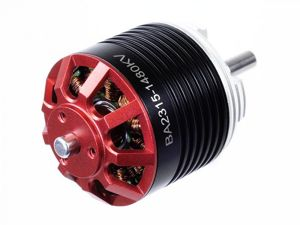 |
| Drive motors | Max Brushless 2006 Mk2 beetleweight planetary gearmotor | Wheel drivetrain | 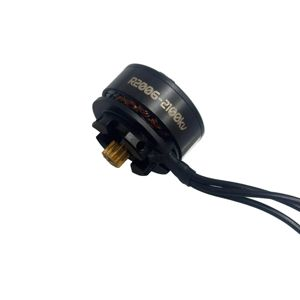 |
| Weapon ESC | Vortex 80A ESC | Controls weapon-motor speed | 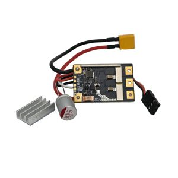 |
| Drive ESC | Brushless drive ESC (model to confirm) | Controls drive motors | 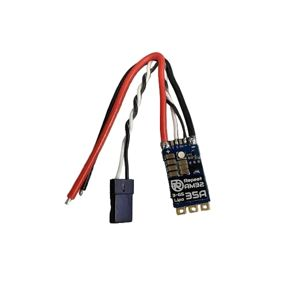 |
| Weapon stock | 2-inch 4140 annealed alloy-steel round bar | Raw stock for weapon fabrication | 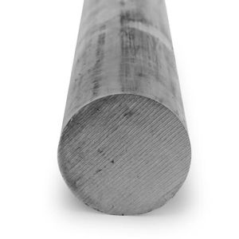 |
| Dead shaft stock | 1/2-inch 4140 alloy-steel round bar | Raw stock for dead shaft fabrication | |
| Chassis material | Carbon fiber plate | Lightweight structural base | 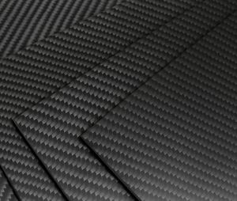 |
| Ball bearings | TRITAN 6000, double sealed; 10 mm bore × 26 mm OD × 8 mm wide | Supports rotating assembly | 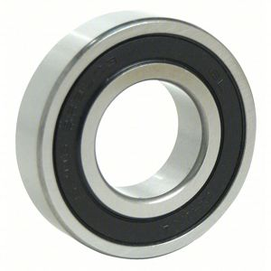 |
| Timing pulley | 16T high-strength GT, press-fit; 3/16-inch shaft, 9 mm maximum belt width | Transfers motor torque to belt | 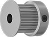 |
| Timing belt | Gates PowerGrip GT 165-3P-09; 9 mm wide | Transmits power to weapon assembly | 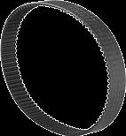 |
| Wheels | BaneBots 2 × 0.8-inch, hub mount, 50A | Traction and mobility | 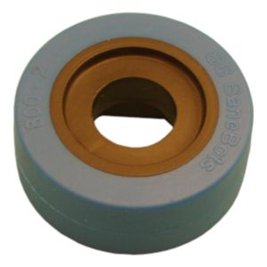 |
| Wheel hubs | T81 hub, 6 mm shaft | Connects wheels to drivetrain | 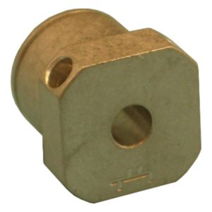 |
| Transmitter | FlySky FS-i6, 6 channels | Driver control inputs | 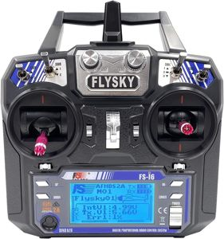 |
| Receiver | FlySky FS-iA6B, 6 channels | Routes radio commands to ESCs | 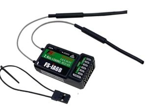 |


Project gallery

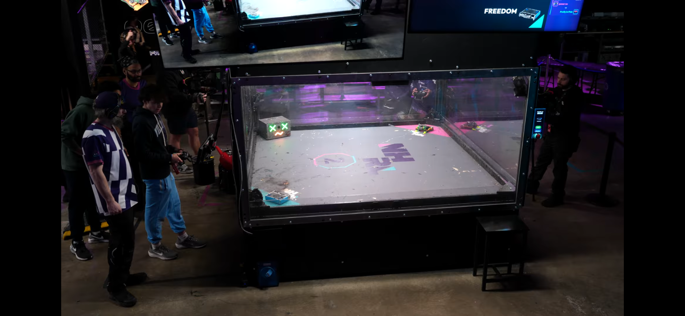

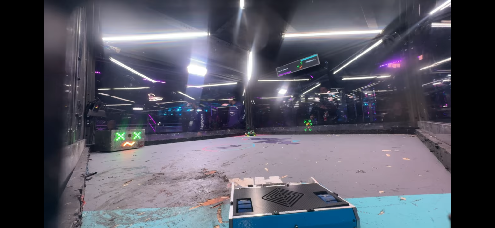

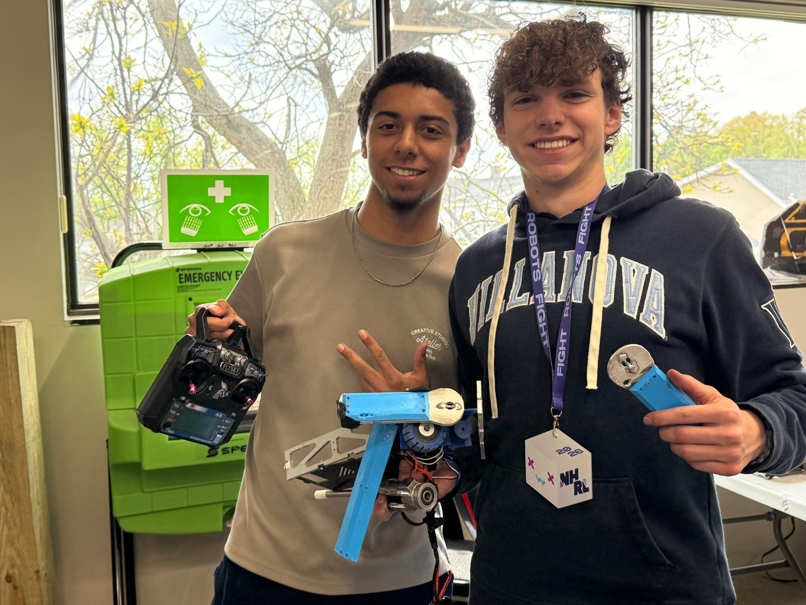

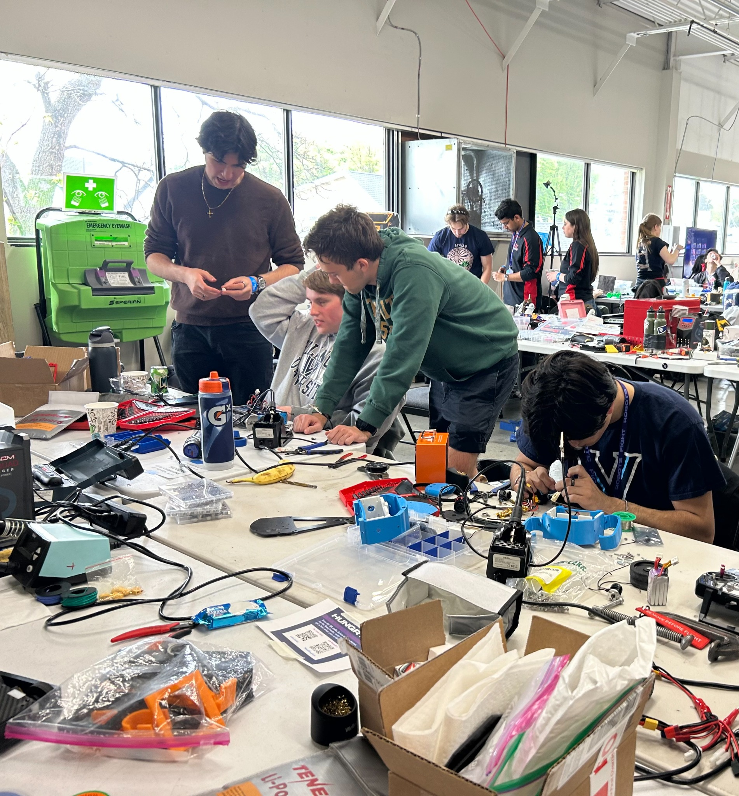

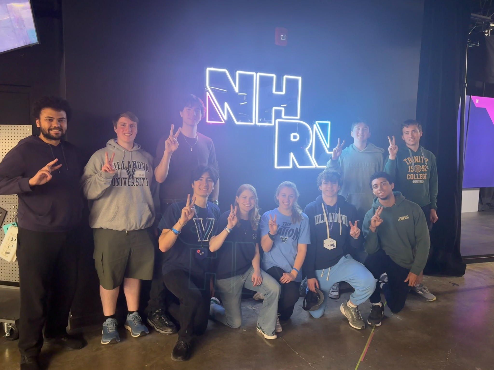